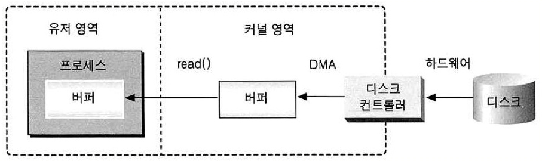
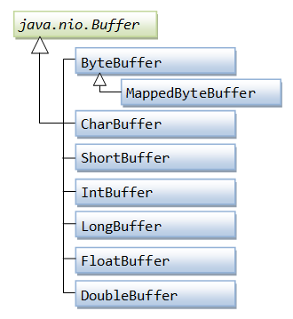
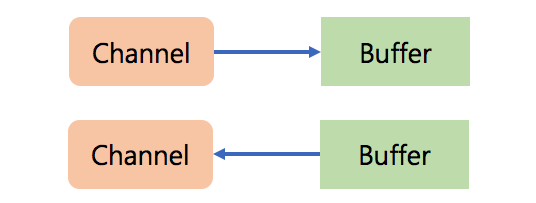
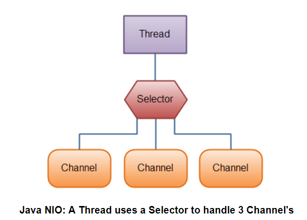

Java Nio 톺아보기
JAVA I/O 가 느린 이유
자바 I/O 가 느린 이유는 많이 알려져 있다. 첫 번째 이유는 C/C++과 달리 OS 에서 관리하는 커널 버퍼에 직접 접근할 수 없다는 것과 I/O 프로세스를 거치는 동안 작업을 요청한 쓰레드는 블록킹된다는 것이 두 번째 이유다. 자바에서 I/O 를 처리하는 전체 구조를 보여주는 그림에서 자세히 살펴보자.

자바 I/O 프로세스 과정은 다음과 같다.
- Process(JVM)이 file을 읽기 위해 kernel에 명령을 전달
- Kernel은 시스템 콜(read())을 사용
- 디스크 컨트롤러가 물리적 디스크로 부터 파일을 읽어옴
- DMA를 이용하여 kernel 버퍼로 복사
- Process(JVM)내부 버퍼로 복사
여기서 발생하는 문제는 다음과 같다.
JVM 내부 버퍼로 복사할 때, CPU 연산 필요
CPU 연산이 필요하기 때문에 리소스를 크게 잡아먹게 된다. 디스크에서 디스크컨트롤러가 커널영역의 버퍼로 복사하는 것은 DMA(Direct Memory Access)기능으로 CPU 연산이 필요없다. DMA 처럼 CPU 자원을 사용하지 않거나, 직접 커널 버퍼를 사용하게 한다면 CPU 자원을 다른 곳에서 사용하는 효율적인 프로그래밍이 가능해 진다.
복사된 내부 버퍼는 작업이 끝난 후 GC 대상
Java I/O에서 내부 버퍼로 사용한 데이터 변수는 GC 대상이 된다. 그리고 GC 는 자바에서 큰 오버헤드 요소이다. 역시나 직접 커널 버퍼를 사용하게 한다면 내부 버퍼를 사용하지 않게되고 GC 또한 필요없어 진다.
복사가 진행되는 동안 I/O 요청 쓰레드 블록킹
운영체제는 효율을 높이기 위해 최대한 많은 양의 데이터를 커널 영역의 버퍼에 저장한 후 프로세스 영역의 버퍼로 전달한다. 따라서 디스크의 파일 데이터를 커널 영역 안의 버퍼로 모두 복사할 때 까지 I/O 요청 쓰레드가 블록킹 된다. JAVA 프로그램에 I/O 요청이 오면 매 요청마다 쓰레드를 만들고 socket 을 accept() 할 때와 data 를 read() 할 때마다 해당 쓰레드가 블록킹된다. 비록 멀티 쓰레드를 지원하지만, 수많은 요청이 오게되면 Context-Switching 에 따른 OverHead 가 클 것이다. 게다가 작업이 끝난 쓰레드는 GC 대상이 된다.
JAVA NIO
JDK 1.4 에서 Java I/O의 단점 보완한 NIO 가 나왔다. 새롭게 변화된 부분에 대해서 살펴보자.
버퍼(Buffer)

IO에서는 출력 스트림이 1바이트를 쓰면, 입력 스트림에서 1바이트를 읽는다. 하지만 이런 형태는 느리기 때문에, 버퍼를 사용해서 여러개의 바이트를 한꺼번에 입력받고 저장했다가 한번에 출력하는 형태로 사용하여 성능을 높입니다. IO는 기본적으로 버퍼를 지원하지 않기 때문에, 버퍼를 제공해주는 보조 스트림인 BufferedInputStream과 BufferedOutputStream을 이용한다. NIO는 기본적으로 버퍼가 지원이 되며, DirectByteBuffer 에 한정된 것이지만 시스템 메모리를 직접 사용할 수 있는 Buffer 클래스가 도입되었다. 이 버퍼는 채널과 상호작용할 때 사용된다.
Direct Buffer vs Non Direct Buffer
버퍼가 사용하는 메모리 위치에 따라서 다이렉트 버퍼와 넌 다이렉트 버퍼로 분류할수 있다.
| 구분 | Direct Buffer | Non Direct Buffer |
|---|---|---|
| 사용 공간 | OS의 메모리 | JVM의 힙 메모리 |
| 버퍼 생성 속도 | 느리다 | 빠르다 |
| 버퍼의 크기 | 크다 | 작다 |
| I/O 성능 | 높다 | 낮다 |
| Use Case | 한번 생성하고 재사용에 유리 | 빈번하게 생성해야 할때 유리 |
다이렉트 버퍼는 채널을 사용해서 버퍼의 데이터를 읽고 저장할 경우에만 운영체제의 native I/O를 사용한다. 만약 채널을 사용하지 않고 ByteBuffer 의 get() / put() 메서드 사용시에는 내부적으로 JNI를 호출해야하기 때문에 오버 헤더가 추가된다.
채널(Channel)

스트림의 향상된 버전인 Channel을 도입했다. 기존 스트림처럼 읽거나 쓰기만 할 수 있는 단방향식부터 둘 다 할수 있는 양방향식까지 세가지 형식이 존재한다. 채널은 비동기적으로 읽기/쓰기를 할수 있고 항상 버퍼에서 읽거나 쓰기를 한다. 그리고 OS 레벨에서 지원하는 Scatter/Gather 기술(시스템 콜 수 줄이기)과 Select() 시스템 콜이 사용 가능해졌다.
셀럭터(Selector)

셀렉터는 하나의 스레드에서 다수의 채널을 처리할 수 있는 기술이다. 기존에 클라이언트 하나당 스레드 하나를 생성해서 처리해야 했는데, 사용자가 늘어나면 스레드가 많이 생성됨으로 인해 급격한 성능 저하를 가져왔다.
Non-blocking IO
NIO는 Blocking과 Non-Blocking 모두 지원을 한다. Non-Blocking은 입출력 작업이 준비가 되면 채널만 선택해서 처리하기 때문에 입출력 작업시 스레드가 멈추지 않는다.
IO와 NIO의 Blocking 모드 차이
IO의 방식으로 각각의 스트림에서 read()와 write()가 호출이 되면 데이터가 입력되고, 데이터가 출력되기전까지, 스레드는 블로킹(=멈춤) 상태가 된다. 이렇게 되면 작업이 끝날때까지 기다려야 하며, 그 이전에는 해당 IO 스레드는 사용할 수 없게 되고, 인터럽트도 할 수 없다. 블로킹을 빠져나오려면 스트림을 닫는 방법 밖에 없다. 그러나 NIO의 Blocking 상태에서는 Interrupt를 이용하여 빠져나올 수도 있다.
요약
IO vs NIO
| 구분 | IO | NIO |
|---|---|---|
| 입출력 방식 | Stream | Channel |
| 버퍼 방식 | Non-Buffer | Buffer |
| 비동기 방식 | X | O |
| Blocking / Non-Blocking 방식 | Blocking Only | Both |
| Use Case | 연결 클라이언트가 적고, IO가 큰 경우 (대용량) | 연결 클라이언트가 많고 IO 처리가 작은 경우 (저용량) |